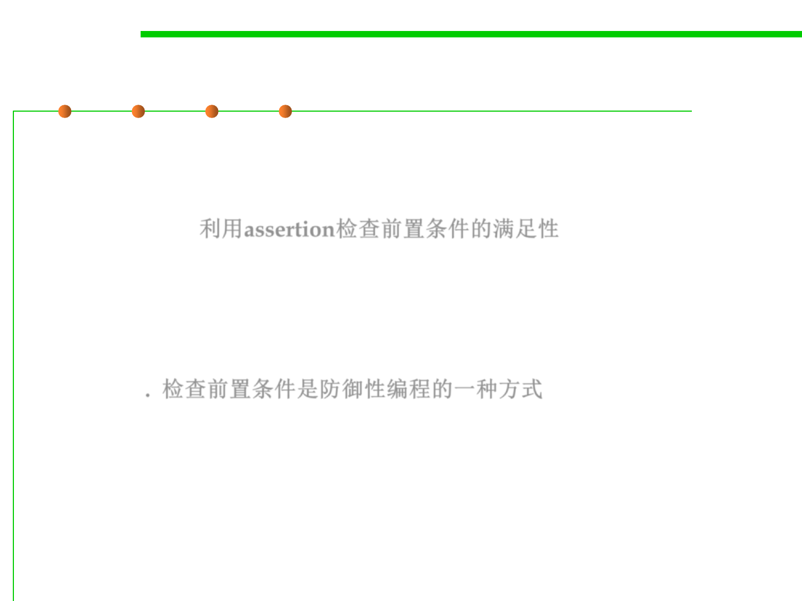

7.3 Assertions and Defensive Programming
Second Defense: Localize Bugs
▪ Assertions: When the precondition is not satisfied, this code
terminates the program by throwing an AssertionError
exception. The effects of the caller’s bug are prevented from
propagating. 利用assertion检查前置条件的满足性
▪ Checking preconditions is an example of defensive programming.
Real programs are rarely bug-free. Defensive programming offers a
way to mitigate the effects of bugs even if you don’t know where
they are. 检查前置条件是防御性编程的一种方式